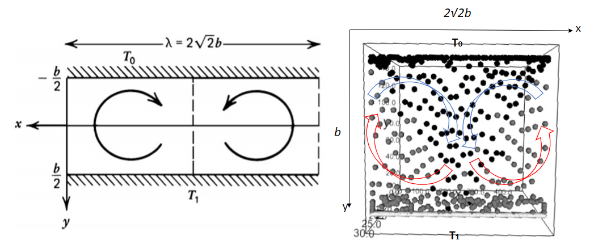

SPH Algorithm for Energy Equation
Geodynamics
(Lecture 8 Part 2)
Since we have the Navier-Stoke equation for simulating fluid, we can break it down to simulate the movement of individual fluid particles, for a particle \(i\), we have
(171)\[\frac{\text{d}\vec{v_i}}{\text{d}t}=\vec{g} - \frac{1}{\rho_i}\nabla p + \frac{\mu}{\rho_i} \nabla^{2}\vec{v}\]
Mathematics for SPH
Smoothed-particle hydrodynamics (SPH) is a computational method used for simulating the mechanics of continuum media, such as solid mechanics and fluid flows. It can be used to solve the equation (171) for any quantity \(Q\) of one particle. It is a meshfree Lagrangian method(where the co-ordinates move with the fluid), and the resolution of the method can easilybe adjusted with respect to variables such as density.
The key assumption of the SPH method is that calculations are based on a weighted average (by \(W(r_i-r_j,h)\)) of field values. \(W\) will give more strength to points that are closer and make points that are further away have a weaker influence. At points that are more than a certain distance away, \(W\) will become zero, which means those points would not have any influence at all.
The general expression for any quantity \(A_{i}\) is given below:
(172)\[A_{i}(r_{i})=\int_{}^{} A(r_{j})W(r_{i}-r_{j},h)dr_{j}\approx\sum_{j}A(r_{i})W(r_{i}-r_{j},h)\]
where \(r_{j}\) is the location of a neighboring point and \(r_{i}\) is the location of our point; \(h\) is the interaction radius, the points that are more than \(h\) away will stop interacting with our point.
So for density, the discrete sum of approximation is
(173)\[A_{i}(r_{i})=\rho(r_i)\approx\sum_{j}\frac{\rho(r_{j})}{\rho(r_j)}W(r_{i}-r_{j},h)m_j\approx\sum_{j}W(r_{i}-r_{j},h)m_j\]
Then we can find the pressure gradient \(\nabla p\)
(174)\[\nabla p (r_i)=\sum \frac{m_j p_j}{\rho_j} \nabla_i W(r_i-r_j,h)\]
But this equation does not obey the conservation of momentum because it does not have the right symmetry (force derived from this equation felt by particle A from B does not equal to the force felt by B from A). To conserve quantities, we can apply Lagrangian, then the equation becomes:
(175)\[\frac{\nabla p} {\rho}=\nabla( \frac{p}{\rho})+\frac{p}{\rho^2} \nabla \rho\]
where \(\nabla(\frac{p}{\rho})=\frac{\nabla p}{\rho}+p \nabla(\frac{1}{\rho})\), and \(p\nabla(\frac{1}{\rho})=-\frac{p}{\rho^2}\nabla \rho\).
So instead of the approximation from equation (174), we could have the following expression by plugging the \(\rho, p, \nabla p \&\nabla \rho\) into equation (175), keeping the momentum a constant:
(176)\[-\frac{\nabla p_i} {\rho_i}\approx-\sum_j m_j (\frac{p_i}{\rho_i^2}+\frac{p_j}{\rho_j^2})\nabla_i W(r_i-r_j,h)\]
where \(W(r_i-r_j,h)\propto e^{\frac{-r_{ij}^2}{h^2}}\) (Gaussian Distribution).
Last but not least, we can apply the same techniques to approximate the viscosity term \(\frac{\mu}{\rho_i} \nabla^{2}\vec{v_i}\).
(177)\[\frac{\mu}{\rho_i} \nabla^{2}\vec{v_i}\approx\frac{\mu}{\rho_i}\sum_j m_j \left[\frac{v_j-v_i}{\rho_j}\right]\nabla^{2}W(r_i-r_j,h)\]
From Navier-Stoke to SPH
In order to compute the \(\frac{\text{d}\vec{v_i}}{\text{d}t}\) at every point for equation (113), we need to calculate the following equations respectively:
(178)\[T_{i} \approx \sum_{j}(T_j-T_i) k dt \nabla W(r_i-r_j,h) \approx \sum_{j}(T_j-T_i) k dt \frac{315}{64\pi h^{9}}(h^{2}-\parallel r_i - r_j\parallel^2)^{3}\]
(179)\[\rho_{i} \approx \sum_{j} m_{j}\frac{315}{64\pi h^{9}}(h^{2}-\parallel r_i - r_j\parallel^2)^{3}\]
Considering the effect of temperature to the change of density we have
(180)\[\rho_{i} = \rho_{i} \cdot(1 - \alpha_v \cdot (T_i-T_0))\]
where \(\alpha_v\) is the thermal expansion coefficient and \(T_0\) is the original temperature of that particle \(i\).
Note that \(T\) and \(\rho_i\) are obtained before calculating the pressure gradient and viscosity term.
(181)\[p_i = k(\rho_i - \rho_0)T_i\]
where \(k\) is a constant, \(\rho_0\) is the resting density (density of fluid at equilibrium).
Then we can compute the pressure and viscosity term
(182)\[\frac{\nabla p_{i}}{p_{i}}\approx\sum_j m_{j}\left[\frac{p_i}{\rho_i^{2}}+\frac{p_j}{\rho_j^{2}}\right]\frac{-45}{\pi h^{6}}(h-\parallel r_i - r_j\parallel)^2\frac{r_i-r_j}{\parallel r_i - r_j\parallel}\]
and
(183)\[\frac{\mu}{\rho_i} \nabla^{2}\vec{v_i}\approx\frac{\mu}{\rho_i}\sum_j m_j \left[\frac{v_j-v_i}{\rho_j}\right]\frac{45}{\pi h^{6}}(h-\parallel r_i - r_j\parallel)\]
After equation (180) to (183) are computed, we can put them together into N-S equation to obtain acceleration.
And then we can use a simple time stepping numerical integration scheme to advance the velocity and position of particles.
C:\Users\JianouJiang\anaconda3\lib\site-packages\ipykernel_launcher.py:58: RuntimeWarning: invalid value encountered in true_divide
initializing mantle convection with
3000
particles
start iterating
start updating
C:\Users\JianouJiang\anaconda3\lib\site-packages\ipykernel_launcher.py:12: RuntimeWarning: invalid value encountered in true_divide
if sys.path[0] == '':
iterations
0
start updating
iterations
1
start updating
C:\Users\JianouJiang\anaconda3\lib\site-packages\ipykernel_launcher.py:4: RuntimeWarning: invalid value encountered in true_divide
after removing the cwd from sys.path.
iterations
2
start updating
iterations
3
start updating
iterations
4
start updating
iterations
5
start updating
iterations
6
start updating
iterations
7
start updating
The simulation takes hours because each iteration is time consuming. The figure below shows the result after many iterations. One problem of this simulation is the boundary condition, where particles are sticked to the wall when they are in contact with it. This means that after many iterations, all particles will be sticked to the wall and the fluid dynamics would be poorly simulated.
Figure 1: Two-dimensional cellular convection in a fluid layer heated from below simulation shows similar character as the figure 6.38 in the book called \(Geodynamics\),[Turcotte_D.L.,_Schubert_G.].
One way of resolving the problem is called the ghost particle. These virtual particle (ghost particle)will interact with the fluid particles through both pressure and shear stress. If no slip boundariesare required, then the reflected particles are given a velocity that has the same magnitude, butopposite direction to that of the matching particle, while for full slip boundary conditions thereflected particle has the same velocity.